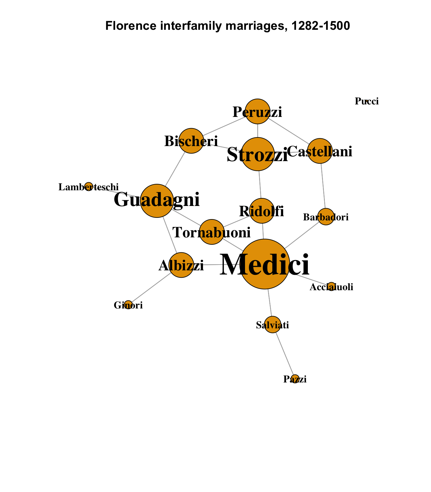
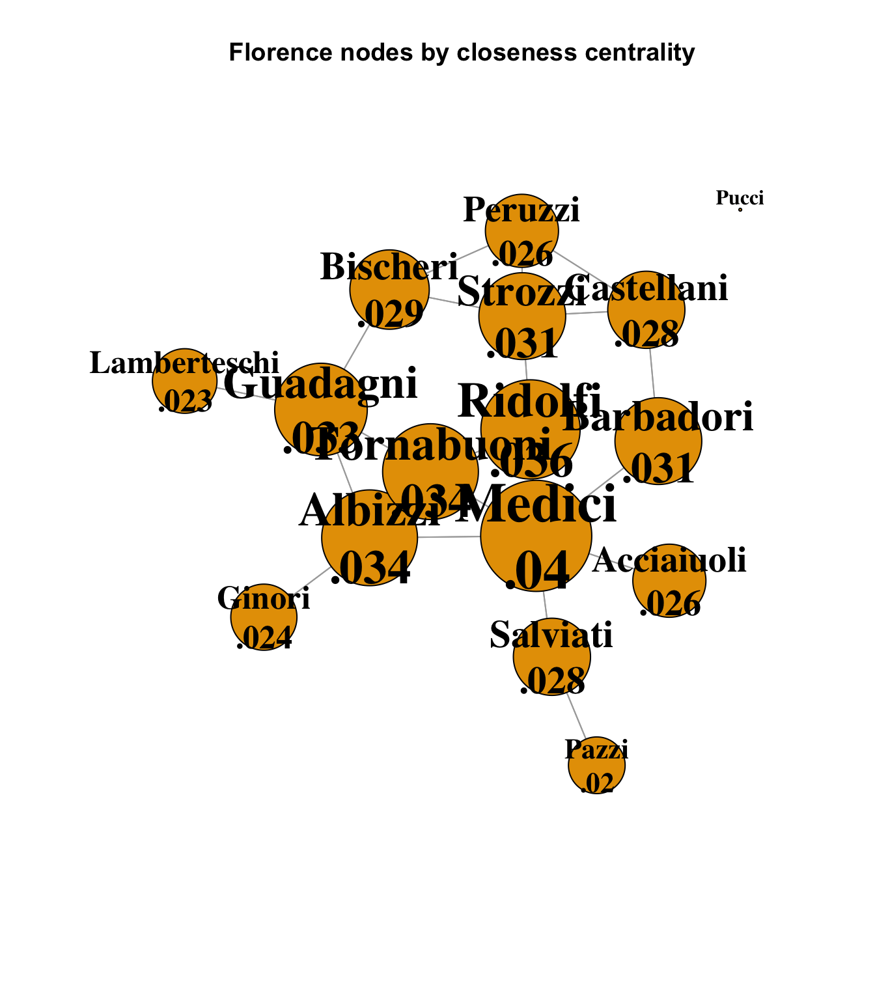
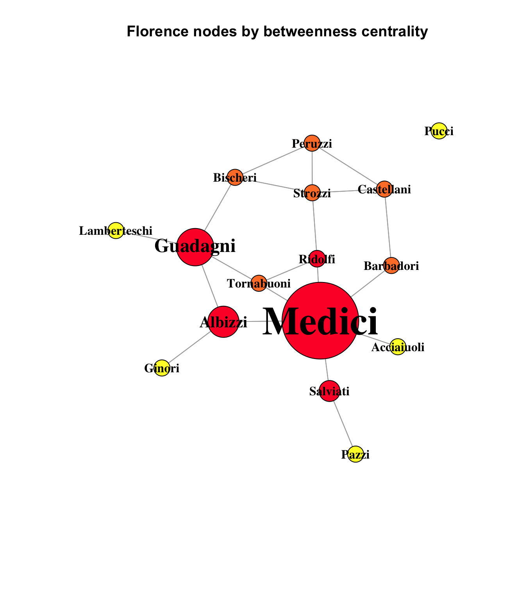
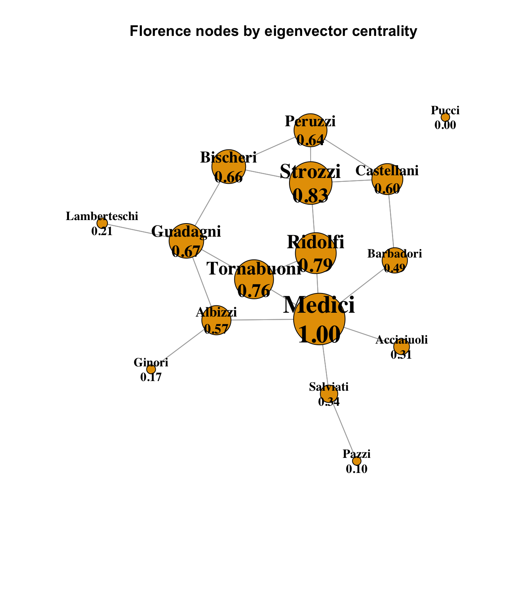
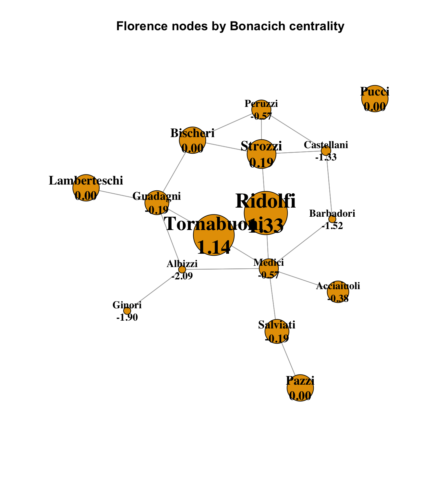

data(flo)
ntwk.ig <- graph_from_adjacency_matrix(flo)
ntwk.vcount <- vcount(ntwk.ig)
ntwk.ecount <- ecount(ntwk.ig)
ntwk.is_bipartite <- is_bipartite(ntwk.ig)
ntwk.is_directed <- is_directed(ntwk.ig)
ntwk.is_weighted <- is_weighted(ntwk.ig)
ntwk.vertex_attr_names <- vertex_attr_names(ntwk.ig)
ntwk.edge_attr_names <- edge_attr_names(ntwk.ig)
ntwk.names <- V(ntwk.ig)$name
ntwk.dyad_census <- igraph::dyad.census(ntwk.ig)
ntwk.triad_census <- igraph::triad_census(ntwk.ig)
ntwk.global_clustering_coef <- transitivity(ntwk.ig, type = "global")
ntwk.local_avg_clustering_coef <- transitivity(ntwk.ig, type = "average")
ntwk.avg_path_length <- average.path.length(ntwk.ig, directed = T)
ntwk.component_names <- names(igraph::components(ntwk.ig))
ntwk.components_no <- igraph::components(ntwk.ig)$no
ntwk.components_csize <- igraph::components(ntwk.ig)$csize
# distances(ntwk.ig,"Acciaiuoli","Strozzi", weights=NA)
ntwk.graph_density <- graph.density(ntwk.ig)
ntwk.graph_density_noloops <- graph.density(ntwk.ig, loops = TRUE)
ntwk.avg_degree <- igraph::degree(ntwk.ig)
# Get the degree info and make the data frame
ntwk.nodes <- data.frame(
name = V(ntwk.ig)$name,
degree = igraph::degree(ntwk.ig),
indegrees = igraph::degree(ntwk.ig, mode = "in", loops = FALSE),
outdegrees = igraph::degree(ntwk.ig, mode = "out", loops = FALSE)
)
# ntwk.nodes[ntwk.nodes$name %in% c("Medici", "Strozzi"),]
# Get degree centralization
ntwk.indegree_centralization <-
centr_degree(ntwk.ig, loops = FALSE, mode = "in")$centralization
ntwk.outdegree_centralization <-
centr_degree(ntwk.ig, loops = FALSE, mode = "out")$centralization
ntwk.total_centralization <-
centr_degree(ntwk.ig, loops = FALSE, mode = "total")$centralizationHomework 4: Centrality Analysis of the Florentine Wedding dataset
r
social networks
Examining centrality measures in the Florentine network
This week, we’re going to look at various measures of degree centrality in the Florentine Wedding dataset.
Last week, we looked at some basic network plots that showed the overall structure of the network, sizing the nodes by their individual degrees. One of the primary features of this data set is all of the ways in which it can be shown how dominant the Medici family was in medieval Florence.
V(ntwk.ig)$size <- ntwk.nodes[,"degree"] * 5
V(ntwk.ig)$label.cex <- ntwk.nodes[,"degree"] / 4
V(ntwk.ig)$label.cex <- pmax(V(ntwk.ig)$label.cex, 1)
set.seed(1235)
V(ntwk.ig)$size <- ntwk.nodes[,"degree"] * 3
plot(
ntwk.ig,
layout = layout_components(ntwk.ig),
edge.arrow.mode = 0,
vertex.label.color = "black",
vertex.shape = "circle",
vertex.label.font = 2,
main = "Florence interfamily marriages, 1282-1500"
)
Closeness Centrality
Closeness centrality is a measure of how close a node is, via the shortest path, to every other node in the network. It is more revealing in hierarchies, where dominant nodes that are closer to the center of the graph will have, on average, shorter paths to the rest of the node than the nodes at the periphery.
The closeness centrality measures of the nodes in the Florentine data may come as a bit of a surprise:
closeness_centrality <- closeness(ntwk.ig, mode = "all")
# One node is not connected, and has NaN as its centrality; replace it
# with 0 just for the graph below.
closeness_centrality[is.nan(closeness_centrality)] <- 0
# Calculate node size by 1000 x closeness
V(ntwk.ig)$size <- closeness_centrality * 1000
# Ensure minimum node size
V(ntwk.ig)$size <- pmax(V(ntwk.ig)$size, 1)
# Base text size on node size
V(ntwk.ig)$label.cex <- V(ntwk.ig)$size / 15
V(ntwk.ig)$label.cex <- pmax(V(ntwk.ig)$label.cex, 1)
set.seed(1235)
closeness_labels <- sprintf("%s\n%s", ntwk.names,
# Omit leading "0" can't be done in sprintf
substr(as.character(round(
closeness_centrality, 3
)), 2, 10))
plot.igraph(
ntwk.ig,
layout = layout_components(ntwk.ig),
vertex.label = closeness_labels,
edge.arrow.mode = 0,
vertex.label.color = "black",
vertex.shape = "circle",
vertex.label.font = 2,
main = "Florence nodes by closeness centrality"
)
Although careful examination shows that the Medici family is still the dominant node, with the highest closeness centrality score, there is very little variation among all but the disconnected Pucci node. The chief reason for this is that the network itself is very small, and tightly connected. As we saw last week, the average path length for this network is 2.486; the Florentine families were all in close proximity to each other, as might be expected given that one of its primary constraints is geographical, but it is interesting to see how the power of the Medici family did not derive primarily from its closeness centrality, or its position in a hierarchy.
Betweenness Centrality
Another useful measure is betweenness centrality, which is a count of the number of shortest paths between nodes that pass through another node. It can be seen as a measure of importance or control, in that it reflects how well a node is positioned along the optimal path between two other nodes.
betweenness_centrality <- betweenness(ntwk.ig)
# Calculate node size by 2 x betweenness
V(ntwk.ig)$size <- betweenness_centrality / 2
# Ensure minimum node size
V(ntwk.ig)$size <- pmax(V(ntwk.ig)$size, 10)
# Base text size on node size
V(ntwk.ig)$label.cex <- V(ntwk.ig)$size / 15
V(ntwk.ig)$label.cex <- pmax(V(ntwk.ig)$label.cex, 1)
colors <- case_when(
betweenness_centrality == 0 ~ "#FFFF33",
betweenness_centrality < 20 ~ "#FF8033",
TRUE ~ "#FF0033"
)
set.seed(1235)
plot(
ntwk.ig,
vertex.color = colors,
layout = layout_components(ntwk.ig),
edge.arrow.mode = 0,
vertex.label.color = "black",
vertex.shape = "circle",
vertex.label.font = 2,
main = "Florence nodes by betweenness centrality"
)
This chart uses heatmap colors to indicate the strength of betweenness centrality. The yellow nodes - the network’s pendants and isolate - are yellow, which indicates a betweenness measure of 0. The orange nodes are nodes with 20 or less optimal paths running through them, and the red nodes have more than 20. In fact, the scale had to be forced in this graph to make the smaller-weighted betweenness nodes visible at all compared to the overwhelming dominance of the Medici node, with a betweenness score more than twice that of its nearest rival:
sort(round(betweenness_centrality, 2), decreasing = TRUE) Medici Guadagni Albizzi Salviati Ridolfi Bischeri
95.00 46.33 38.67 26.00 20.67 19.00
Strozzi Barbadori Tornabuoni Castellani Peruzzi Acciaiuoli
18.67 17.00 16.67 10.00 4.00 0.00
Ginori Lamberteschi Pazzi Pucci
0.00 0.00 0.00 0.00 95 of the 312 optimal paths in the Florence network ran through the Medici. It is easy to imagine many different ways that such centrality could manifest as various forms of power.
Eigenvector and Bonacich Power
Eigenvector centrality is a measure of not just how many alters a node is connected to, but of how well-connected those alters are. A node with a high eigenvector centrality score is connected to significant numbers of other highly central nodes. For this chart, we can return to standard-area scaling (except for slightly inflating the smallest to keep them visible), and we see that once again, the Medici are in a dominant position, well-connected to the other well-connected Florence families:
eigen_info <- centr_eigen(ntwk.ig, directed = T)
# Calculate node size by 1000 x closeness
V(ntwk.ig)$size <- eigen_info$vector * 30
# Ensure minimum node size
V(ntwk.ig)$size <- pmax(V(ntwk.ig)$size, 5)
# Base text size on node size
V(ntwk.ig)$label.cex <- V(ntwk.ig)$size / 15
V(ntwk.ig)$label.cex <- pmax(V(ntwk.ig)$label.cex, 1)
# colors <- case_when(
# betweenness_centrality == 0 ~ "#FFFF33",
# betweenness_centrality < 20 ~ "#FF8033",
# TRUE ~ "#FF0033"
# )
set.seed(1235)
eigen_labels <- sprintf("%s\n%.2f", ntwk.names, eigen_info$vector)
plot(
ntwk.ig,
# vertex.color = colors,
layout = layout_components(ntwk.ig),
vertex.label = eigen_labels,
edge.arrow.mode = 0,
vertex.label.color = "black",
vertex.shape = "circle",
vertex.label.font = 2,
main = "Florence nodes by eigenvector centrality"
)
It is interesting to look at the Strozzi family in this diagram, which has the second-highest eigenvector centrality score behind the Medici. Recall that in terms of simple degree, the Strozzi and Guadagni families were equal, and in terms of betweenness centrality, the Guadagini family had a significantly higher score than the Strozzi, showing that more optimal / shortest paths between nodes passed through the Guadagini. This could be interpreted as a measure of positional influence and power. However, here we see that the Strozzi’s eigenvector centrality is higher than the Guadagini, and it is plain to see why; the Strozzi are connected to four other families with relatively high eigenvector centrality (the Bischeri, Peruzzi and Castellani), where the Guadagni family is somewhat penalized by its connection to the Lamberteschi pendant node that has no other connections. So, although the Guadagni family was more centrally positioned in terms of betweenness, the Strozzi family’s fewer optimal paths were nonetheless connected to more central families.
Finally, it is worth examining the Bonacich power connections, which is an interesting measure that in some way inverts the eigenvector concept, proposing that being well-connected to other well-connected nodes does not mean that a node has the ability to influence those nodes, as they are also well-connected, and so therefore there is advantage in being connected to weaker nodes. When viewed purely in terms of potential power dynamics, this has some interesting merit.
bon_info <- power_centrality(ntwk.ig)
# H/T: range01 <- function(x){(x-min(x))/(max(x)-min(x))}
range01 <- function(x){(x-min(x))/(max(x)-min(x))}
scaled_bon_info <- range01(bon_info)
# Calculate node size by 1000 x closeness
V(ntwk.ig)$size <- scaled_bon_info * 30
# Ensure minimum node size
V(ntwk.ig)$size <- pmax(V(ntwk.ig)$size, 5)
# Base text size on node size
V(ntwk.ig)$label.cex <- V(ntwk.ig)$size / 15
V(ntwk.ig)$label.cex <- pmax(V(ntwk.ig)$label.cex, 1)
# colors <- case_when(
# betweenness_centrality == 0 ~ "#FFFF33",
# betweenness_centrality < 20 ~ "#FF8033",
# TRUE ~ "#FF0033"
# )
set.seed(1235)
eigen_labels <- sprintf("%s\n%.2f", ntwk.names, bon_info)
plot(
ntwk.ig,
# vertex.color = colors,
layout = layout_components(ntwk.ig),
vertex.label = eigen_labels,
edge.arrow.mode = 0,
vertex.label.color = "black",
vertex.shape = "circle",
vertex.label.font = 2,
main = "Florence nodes by Bonacich centrality"
)
This offers a very different view of the power dynamics in Florence. The Medici are greatly reduced, because their direct connections are all powerful families themselves, and so although they are well-connected by other measures, they may not be in a position of power over those other families. More influential families according to Bonacich would include the Ridolfi and Tornabuoni families, who suddenly become dominant from this perspective. The Bonacich calculation is complex and includes notions of centrality and power, and is not purely a measure of adjacency; see how small the Albizzi’s Bonacich score is, even though one of its three connections is to the pendant Ginori family, which is nonetheless in a slightly stronger position according to Bonacich. A fuller investigation of this dynamic would require some careful research.